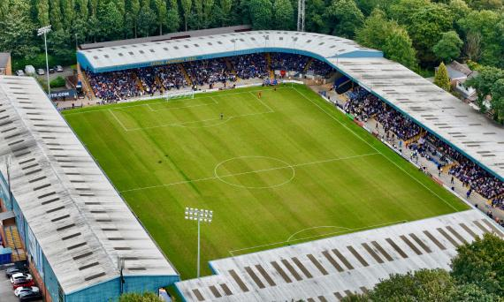

Sobre La odisea de Boca para llegar al debut de la Copa Sudamericana en Bolivia

Boca comenzará su camino en la Copa Sudamericana en busca de alcanzar su 19° título internacional de su historia frente a Nacional Potosí de Bolivia. El problema para el plantel, además de los temibles 4.000 metros de altura, será la travesía previa que deberán recorrer para llegar a las instalaciones del estadio Víctor Agustín Ugarte. Un verdadero rally que incluirá camionetas 4x4, aviones y dos días de aventura antes de salir a la cancha.La sesuda logística que requiere el trayecto a la ciudad boliviana se debe a la falta de aeropuertos cercanos a la zona donde emerge el club nacido en abril de 1942. Con esta dificultad planteada de antemano, la delegación ya salió este martes desde el Ministro Pistarini y aterrizará en Sucre, la capital constitucional del país vecino donde hará base.
Messi se entrenó a la par en Inter Miami y podría sumar minutos ante Monterrey, por la Copa de Campeones de la Concacaf
El argentino Lionel Messi se entrenó a la par del grupo en Inter Miami tras una "pequeña lesión" que lo alejó de varios compromisos y ahora la incógnita pasa por saber si está en condiciones de competir este miércoles contra Monterrey, por la ida de los cuartos de final de la Liga de Campeones de la Concacaf. Si bien todavía no está confirmado que sea titular, la idea de Gerardo Martino es que Messi, quien respetó los tiempos de su recuperación, juegue aunque sea un rato en el Estadio DRV PNK, de cara al torneo que otorgará un cupo para el Mundial de Clubes 2025.
La formación de River vs. Deportivo Táchira, por la Copa Libertadores
Con la intención de dejar atrás el golpe en Parque Patricios, cambiar la cara y empezar un camino de crecimiento, River pone primera en la Copa Libertadores en la visita a Deportivo Táchira de este martes, a partir de las 21.30. El Millonario quiere abrir el Grupo H con el pie derecho y por eso Martín Demichelis analiza meter mano en la formación que viene de perder con Huracán.Por lo pronto, el cambio que es una certeza después de la opaca presentación en la derrota 1-0 contra el Globo tiene que ver con la vuelta a la titularidad de Paulo Díaz en lugar del juvenil Daniel Zabala. El chileno había llegado al límite desde lo físico tras su participación en la fecha FIFA, fue resguardo y ahora sí estará de regreso en su condición de pieza clave para el equipo.
Claudio Echeverri y su mensaje previo a la única Copa Libertadores que jugará antes de irse de River
River visitará este martes desde las 21.30 a Deportivo Táchira de Venezuela en el Polideportivo de Pueblo Nuevo, por el debut en el Grupo H de la Copa Libertadores, y en el once inicial del entrenador Martín Demichelis estará Claudio Echeverri, quien publicó un mensaje especial previo a iniciar la única edición del máximo certamen del continente que jugará antes de irse a Manchester City.Echeverri será uno de los dos cambios que haría Demichelis con respecto al equipo que perdió con Huracán en el estadio Tomás Adolfo Ducó, por la fecha 12 de la Copa de la Liga, ingresando en lugar de Esequiel Barco (la otra modificación sería la vuelta del chileno Paulo Díaz por el juvenil Daniel Zabala).